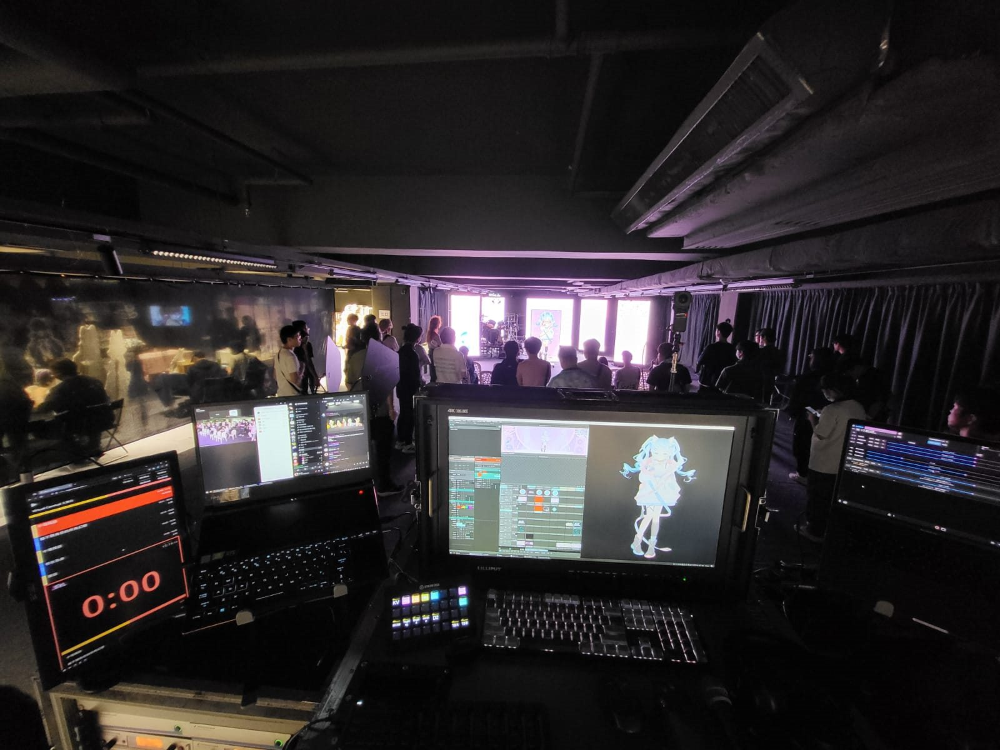

Direct
For collaborations, technical direction, virtual production, events, systems engineering or software work.
Contact
The most useful conversations start with a goal, the constraints, the venue or stage context, and the team that needs to operate the result.
Direct
For collaborations, technical direction, virtual production, events, systems engineering or software work.
Elsewhere
Download the portfolio/CV or review code and software-related work.
Projects where both creative and engineering judgment matter.
LED stage planning, Unreal/nDisplay workflows, tracking, genlock, lens calibration and operating procedures.
Motion capture, virtual artists, streaming, media routing, show control and control-room design.
Custom tools, AI-assisted workflows, infrastructure planning and production networks.
Before we talk
Send the intended outcome, schedule, venue constraints, capture or display formats, current technical stack and the people who will operate the system. If there is already a show deck, stage plan, network map or reference image, include it.
